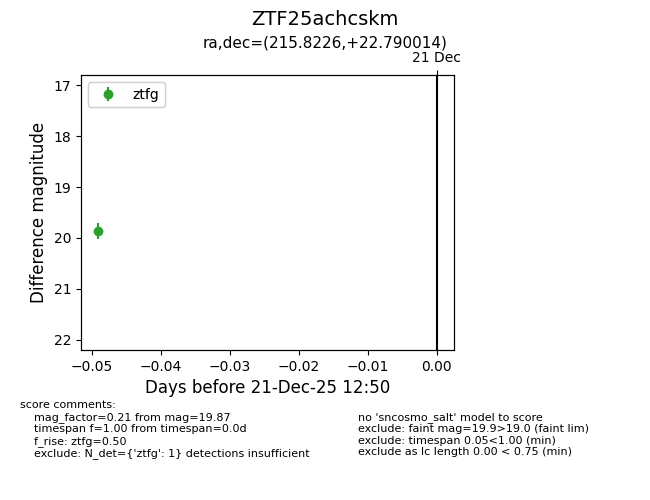
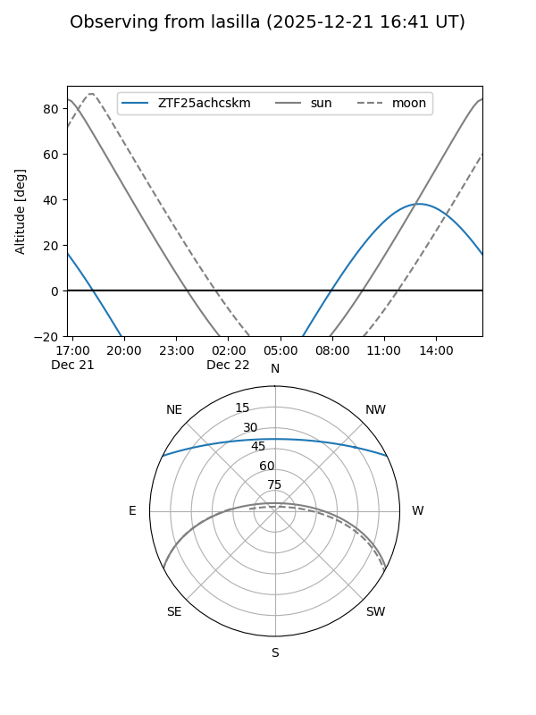
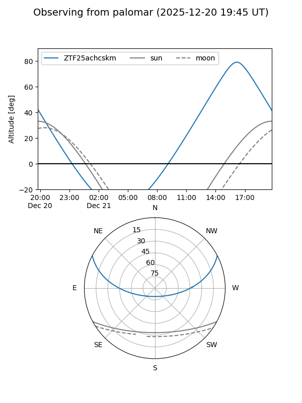

ZTF25achcskm
Target ZTF25achcskm at 2025-12-21 12:52
Aliases and brokers:
FINK: fink-portal.org/ZTF25achcskm
Lasair: lasair-ztf.lsst.ac.uk/objects/ZTF25achcskm
ALeRCE: alerce.online/object/ZTF25achcskm
alt names
ZTF25achcskm (ztf,fink_ztf)
Coordinates:
equatorial (ra, dec) = 215.8226,+22.79001
equatorial (HMS+DMS) = 14:23:17.42,+22:47:24.05
galactic (l, b) = (26.2196,+68.76691)
Flags:
Photometry:
last ztfg=19.87
1 ztfg detections
Lightcurve

Visibility


Additional plots